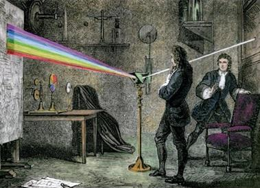

Feitos Notáveis

Isaac Newton foi um dos cientistas mais influentes da história. Este fez várias descobertas e contribuições significativas para diversos campos da física e da matemática. Abaixo algumas das descobertas mais notáveis atribuídas a ele:
- Leis de Newton: Newton formulou as três leis fundamentais do movimento, que são a base da mecânica clássica. São elas:
- Primeira Lei de Newton: Um objeto em repouso permanece em repouso e um objeto em movimento permanece em movimento uniforme a menos que uma força atue sobre ele.
- Segunda Lei: A força aplicada a um objeto é igual à taxa de mudança de momentum do objeto, e é na mesma direção que essa mudança de momentum. Matematicamente, F = ma, onde F é a força, m é a massa do objeto e a é a riqueza.
- Terceira Lei: Para cada ação, há uma fato de igual magnitude e direção, mas de sentido oposto.
- Lei da Gravidade Universal: Newton anunciou a Lei da Gravitação Universal, que descreve a força da gravidade entre dois corpos com massa. A fórmula para essa lei é F = G * (m1 * m2) / r^2, onde F é a força gravitacional, G é a constante gravitacional, m1 e m2 são as massas dos objetos er é a distância entre eles.
- Cálculo Diferencial e Integral: Newton é co-creditado com Gottfried Wilhelm Leibniz pelo desenvolvimento do projeto diferencial e integral. Essa ferramenta matemática foi fundamental para entender o comportamento das funções e sua relação com o movimento e mudanças
- Teoria dos Núcleos e Óptica: Newton converteu experimentos com luz e núcleos, demonstrando que a luz branca pode ser decomposta em um espectro de núcleos usando um prisma. Ele também estudou a natureza das cores e sua relação com a refração e reflexão.
- Leis do Movimento dos Fluidos: Newton contribuiu para o estudo do movimento dos fluidos, formulando as leis básicas que regem o comportamento dos fluidos e suas interações com superfícies sólidas.
- Teoria do Binômio: Newton desenvolveu uma expansão binomial para potências não inteiras, conhecida como a Fórmula de Newton para o Binômio.
- Teoria do Calor: Newton contribuiu para a compreensão da natureza do calor, propondo teorias sobre a propagação e conservação do calor.